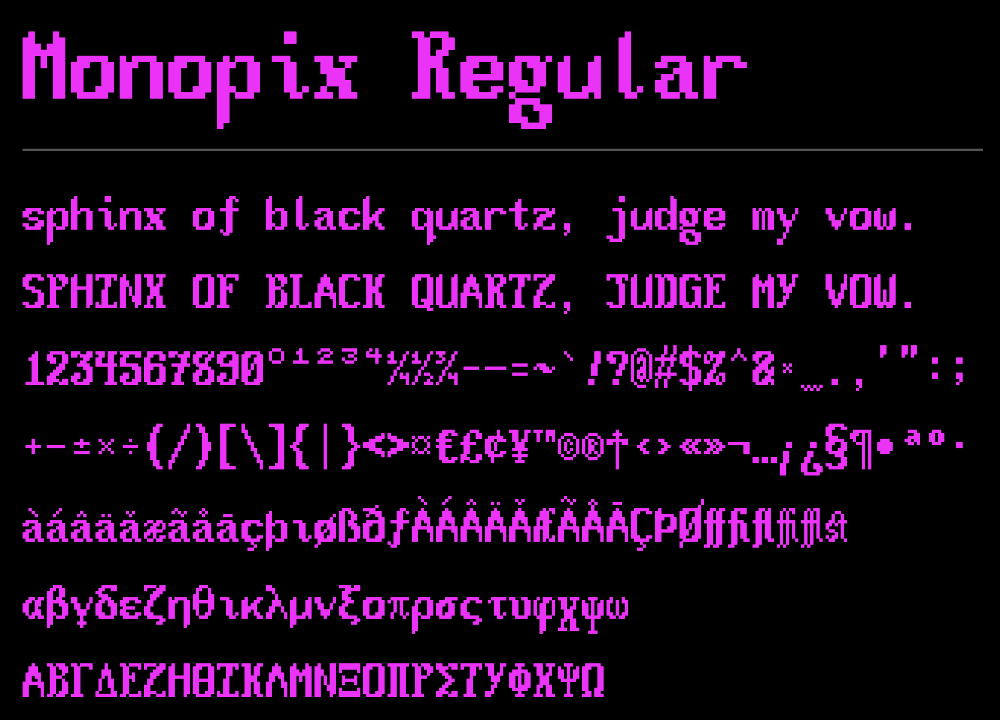

Monopix - a monospaced, pixelated typeface with a very innovative name
Download Monopix:
This content is licensed under Creative Commons BY-SA 3.0.

I'm far from a Google fan, but I do appreciate the quality of the typefaces on the Google Fonts website. However, while searching for a new font for my website, one thing about Google Fonts got quite annoying: it's impossible to select multiple categories in the search filter. You can filter for monospaced fonts, and you can filter for pixelated fonts, but you can't apply both filters at once. In graphic designer fasion, I also searched 1001fonts, and though the site allows multi-filtering, I expectedly found nothing I liked. (Sorry 1001fonts fans.)

Obviously, the only reasonable next step was to give up on my font searching quest and instead design one of my own. After a thorough query of free font-making software, I settled on FontStruct, a web-based, grid-based, yet flexible and well-made font creation tool. It didn't take long to grow accustomed to. Within two days, I'd made the monospaced, pixelated typeface that I longed for. Fittingly, I named it Monopix. After that, in a designer's high, I installed it everywhere I could, including my IDE, where it's in use to this day.
I actually finished Monopix in November of 2025, but haven't found the time to write about it. A bit later, I came back and made Monopix XL, a higher-resolution version of the typeface. Unfortunately, as a commenter on FontStruct rightfully pointed out, the XL version lost some of the flair that made Monopix Regular special. As such, it's available online for download, but it's not of high enough quality for me to write about here.
Click here to view the glyph repertoire as text
Monopix Regular
sphinx of black quartz, judge my vow.
SPHINX OF BLACK QUARTZ, JUDGE MY VOW.
1234567890°¹²³⁴¼½¾-—=~`!?@#$%^&*_.,'":;
+–±×÷(/)[\]{|}<>¤€£¢¥™©®†‹›«»¬…¡¿§¶•ªº·
àáâäǎæãåāçþıøßðƒÀÁÂÄǍÆÃÅĀÇÞØfffiflffifflst
αβγδεζηθικλμνξοπρσςτυφχψω
ΑΒΓΔΕΖΗΘΙΚΛΜΝΞΟΠΡΣΤΥΦΧΨΩ